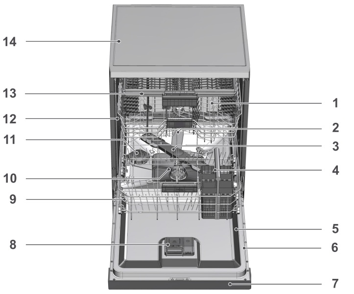

За машината Безопасност и монтаж Сол и препарати Подреждане и пускане Почистване и проблеми
Проект № 16 Ръководство за съдомиялни Teka
Това упътване е за съдомиялните машини Teka DFI 74910, DFI 74950 и DFI 44700. Те са предназначени за миене на домакински съдове и прибори. Някои части и функции се различават според модела.

Общ изглед на съдомиялната машина